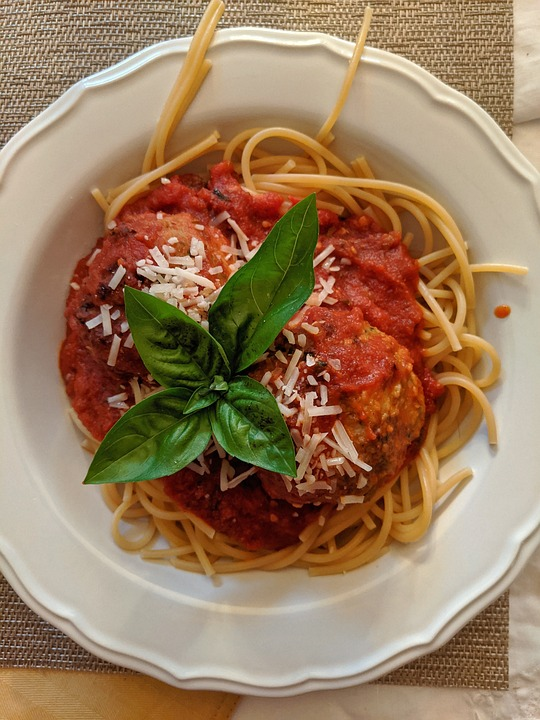

Spaghetti with Meatballs
Recipe from Parsnip app

Ingredients
- 1/2 lb Spaghetti
- Water
- 1/4 cup pf Grated Parmesan Cheese
- 2 Tablespoons of Salt
- 7 oz of Tomato Puree
- 2 tablespoons (34 grams) of Tomato Paste
- 2 tablespoons of Cooking Oil
- 3 Crushed cloves of Garlic
- 2 sprigs of Basil
- 2 tablespoons of Butter
- 10 oz of Ground Beef
- 1 Egg
- 1/4 cup of Breadcrumbs
- 1/4 of Grated Parmesan Cheese
- 1 tablespoon of Dried Oregano
Recipe
- Add 10oz ground beef, 1 egg, 1/4 cup of breadcrumbs, 1/4 cup grated parmesan cheese and 1 tablespoon oregano to a bowl and combine well with gloved hands.
- Form beef mix into even 1.5 inch bals by rolling between the hands.
- Heat a cast iron or non-stick to medium-high and brown the meatballs in 1 tablespoon of oil, searing them on each side and being careful not to break them.
- Once they are browned on the outside but still pink in the middle, place them aside.
- Add remaining oil to meatball pan and saute with crushed garlic.
- Before garlic darkens, add 2 tablespoons of tomato paste and saute until bubbling, scraping meatball fond.
- Deglaze pan with water before adding tomato puree, simmer with lid off stirring when needed.
- After simmering and reduced until thick, season with salt to taste and add meatballs to warm them while continuing to simmer.
- Add salt to large pot of water and bring to a boil with the lid on.
- Once water is at a rolling boil, add pasta and stir frequently in the beginning to prevent sticking.
- Once noodles are cooked, strain in sink.
- Stir some chopped basil leaves through the sauce.
- Serve the sauce and meatballs over spaghetti, sprinkling parmesan over the top and garnish with basil leaves.